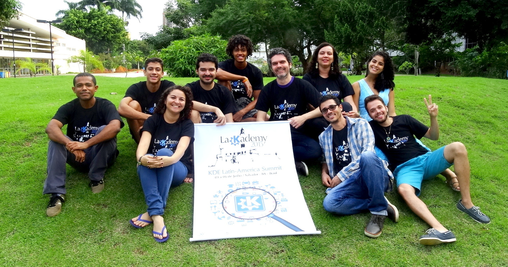

Em 2015 o LaKademy aconteceu em Salvador, Bahia, casa do Akademy-BR, do primeiro grupo brasileiro de desenvolvedores do KDE, chamado Live Blue, e terra dos Orixás!
O evento foi realizado entre os dias 03 e 06 de Junho, na Universidade Federal da Bahia (UFBA). Pela primeira vez nós fizemos uma campanha de arrecadação de fundos para o LaKademy. Para a realização dessa edição, além dos doadores que gentilmente colaboraram dando suporte financeiro, contamos com o apoio de infraestrutura dado pelo Programa Onda Digital e pela Superintendência de Tecnologia da Informação da UFBA.
Abaixo você pode conferir a programação de atividades do encontro. Você também pode encontrar um relato completo de tudo que aconteceu no LaKademy 2015 nesse link. Um álbum com imagens do evento também está disponível em nossa galeria aqui.
